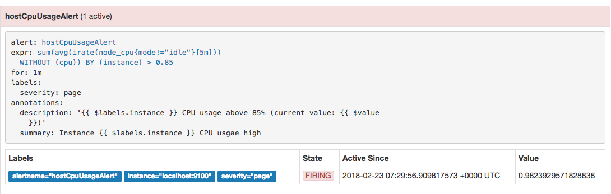

部署Alertmanager
Alertmanager和Prometheus Server一样均采用Golang实现，并且没有第三方依赖。一般来说我们可以通过以下几种方式来部署Alertmanager：二进制包、容器以及源码方式安装。
使用二进制包部署AlertManager
获取并安装软件包
Alertmanager最新版本的下载地址可以从Prometheus官方网站https://prometheus.io/download/获取。
export VERSION=0.15.2
curl -LO https://github.com/prometheus/alertmanager/releases/download/v$VERSION/alertmanager-$VERSION.darwin-amd64.tar.gz
tar xvf alertmanager-$VERSION.darwin-amd64.tar.gz
创建alertmanager配置文件
Alertmanager解压后会包含一个默认的alertmanager.yml配置文件，内容如下所示：
global:
resolve_timeout: 5m
route:
group_by: ['alertname']
group_wait: 10s
group_interval: 10s
repeat_interval: 1h
receiver: 'web.hook'
receivers:
- name: 'web.hook'
webhook_configs:
- url: 'http://127.0.0.1:5001/'
inhibit_rules:
- source_match:
severity: 'critical'
target_match:
severity: 'warning'
equal: ['alertname', 'dev', 'instance']
Alertmanager的配置主要包含两个部分：路由(route)以及接收器(receivers)。所有的告警信息都会从配置中的顶级路由(route)进入路由树，根据路由规则将告警信息发送给相应的接收器。
在Alertmanager中可以定义一组接收器，比如可以按照角色(比如系统运维，数据库管理员)来划分多个接收器。接收器可以关联邮件，Slack以及其它方式接收告警信息。
当前配置文件中定义了一个默认的接收者default-receiver由于这里没有设置接收方式，目前只相当于一个占位符。关于接收器的详细介绍会在后续章节介绍。
在配置文件中使用route定义了顶级的路由，路由是一个基于标签匹配规则的树状结构。所有的告警信息从顶级路由开始，根据标签匹配规则进入到不同的子路由，并且根据子路由设置的接收器发送告警。目前配置文件中只设置了一个顶级路由route并且定义的接收器为default-receiver。因此，所有的告警都会发送给default-receiver。关于路由的详细内容会在后续进行详细介绍。
启动Alertmanager
Alermanager会将数据保存到本地中，默认的存储路径为data/。因此，在启动Alertmanager之前需要创建相应的目录：
./alertmanager
用户也在启动Alertmanager时使用参数修改相关配置。--config.file用于指定alertmanager配置文件路径，--storage.path用于指定数据存储路径。
查看运行状态
Alertmanager启动后可以通过9093端口访问，http://192.168.33.10:9093

Alert菜单下可以查看Alertmanager接收到的告警内容。Silences菜单下则可以通过UI创建静默规则，这部分我们会在后续部分介绍。进入Status菜单，可以看到当前系统的运行状态以及配置信息。
关联Prometheus与Alertmanager
在Prometheus的架构中被划分成两个独立的部分。Prometheus负责产生告警，而Alertmanager负责告警产生后的后续处理。因此Alertmanager部署完成后，需要在Prometheus中设置Alertmanager相关的信息。
编辑Prometheus配置文件prometheus.yml,并添加以下内容
alerting:
alertmanagers:
- static_configs:
- targets: ['localhost:9093']
重启Prometheus服务，成功后，可以从http://192.168.33.10:9090/config查看alerting配置是否生效。
此时，再次尝试手动拉高系统CPU使用率：
cat /dev/zero>/dev/null
等待Prometheus告警进行触发状态：

查看Alertmanager UI此时可以看到Alertmanager接收到的告警信息。

接下来
目前为止，我们已经成功安装部署了Alertmanager并且与Prometheus关联，能够正常接收来自Prometheus的告警信息。接下来我们将详细介绍Alertmanager是如何处理这些接收到的告警信息的。